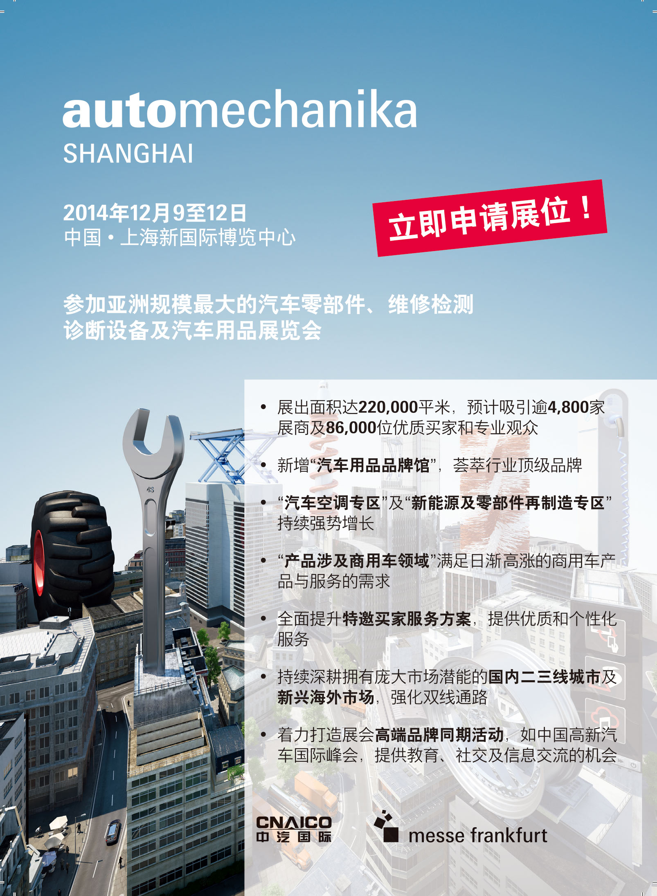

参展企业数量再创新纪录
全馆覆盖呈现史上最大规模Automechanika Shanghai
精彩同期活动再度引燃行业交流盛会
亚洲规模最大的汽车零配件、维修检测诊断设备及服务用品展览会Automechanika Shanghai将于2014年12月9至12日在北京新国际展览中心拉开帷幕，本届展会参展商数量再创新高。
本届展会共吸引来自39个国家及地区4,906家参展企业同场竞技，较去年上升6%；其中有来自5个国家的企业首次参与展会，分别是白俄罗斯、秘鲁、葡萄牙、瑞士以及约旦。此外，共有34个国家和地区的参展商将再次亮相，分别是阿根廷、阿拉伯联合酋长国、澳大利亚、巴基斯坦、巴西、保加利亚、波兰、丹麦、德国、俄罗斯、法国、韩国、荷兰、加拿大、马来西亚、美国、墨西哥、日本、瑞典、斯洛伐克、泰国、土耳其、西班牙、希腊、新加坡、伊朗、意大利、印度、印度尼西亚、英国、越南、中国、中国台湾以及中国香港。
统计数据显示，本届展会海外展商数量达581家，较去年上涨11%；
国内展商数量跃升至4,325家，涨幅5%。
在39个参展国家及地区中，多达17个将以国际展团形式参与，其中首次亮相的有阿根廷及巴基斯坦展团。延续往届成功参展效果，此次再度回归的还包括波兰、德国、法国、韩国、马来西亚、美国、日本、泰国、土耳其、西班牙、新加坡、意大利、印度、英国以及中国台湾展团，它们将带来本国汽车行业最新产品及科技展示。
全馆覆盖呈现史上最大规模Automechanika Shanghai
本届Automechanika Shanghai启用北京新国际博览中心的全部17个室内标准展馆以及10个室外临时展馆，展览总面积实现5%的增长，达到220,000平方米，成为该展会发展历史上的规模之最。
进一步分析参展企业数据，可以看出2014年展会三大主要产品板块规模较去年都实现了不同程度的增长，更好地覆盖了整个产业链。
本届展会新增设“汽车用品品牌馆”，汇聚了用品领域的诸多行业顶级品牌，实现了用品及改装板块10.4%的最大增幅，居三大板块之首；往届展会的成功效应也同样吸引了众多忠实参展企业的回归并扩容，从一定程度上推动了维修与保养板块7.3%的较大增幅，仅次于用品及改装板块；而汽车零部件板块则更注重品牌、产品服务范畴以及纵深细分的均衡发展等方面，实现平稳增长。
面对再破纪录的参展商数量及展示面积的进一步扩大，法兰克福展览（香港）有限公司高级总经理曹建生先生表示：“我非常欣喜地看到Automechanika Shanghai逐年不断壮大。今年，在参展商数创新高的同时，展示总面积也达到了历史之最。各项数据的增长是最直观的信号，这表明Automechanika Shanghai已成为中国乃至全球范围汽车行业领先的交流及贸易服务平台。”
2014年展会将吸引逾86,000名海内外观众，数量持续稳定增长。来自全球各个国家及地区的参观团是观众数量提升的重要因素：今年展会将首次迎接来自尼泊尔及越南的观众团，往届曾参与的澳大利亚、波兰、德国、韩国、马来西亚、日本、土耳其、希腊、伊朗、印度、印度尼西亚以及中国香港等各地行业机构此次也将再度组织买家团前来。此外，以河北、河南、湖北、四川、天津以及广东等地区为代表，来自国内南、北、西部各个地区近50个国内参观团也竞相报名参与。
本届展会还获得了42家支持单位的全力协助，其中包括7家新加盟的合作单位，分别是：
· 中国国际贸易促进委员会温州市委员会
· 中国国际贸易促进委员会浙江省瑞安市支会
· 铝车轮质量协会
· 河北汽车保修设备行业协会
· 河北省汽车配件行业协会
· 瑞安市汽车摩托车配件行业协会
· OIB – Uludag Automotive Industry Exporters Union（土耳其）
曹建生先生补充道：“本届北京展支持单位的扩容也进一步印证了展会广泛而深入的行业影响力。而我们针对新兴市场和产品纵深领域的持续努力也收获了来自河北、江苏以及土耳其等相关协会、组织的鼎力支持。这些支持力量在参展商或专业观众领域都产生了有效的推动。”
Automechanika Shanghai不仅有越来越多的支持机构，更吸引许多新品牌参与到这一行业盛会之中。例如汽车零部件板块的爱思帝、梅施及天纳克；维修与保养板块的海天及JTC；用品及改装板块的BMC、奔瑞、华钿勇士及诺为等。
来自各个板块的众多行业领军品牌将再度登场。其中，汽车零部件板块的代表企业有Brembo、北汽集团、铂锐科、博格化钠、博世、采埃孚、大陆、岱高、法雷奥、费比、富奥、盖茨、冠盛、海拉、辉门、康迪泰克、马勒、曼胡默尔、NTN-SNR、奇瑞、日立、上汽集团、舍弗勒、天合、万象、信义、扬弘实业、青特集团、柳州五菱及中国长安。
维修与保养板块的代表企业有Berton、百斯巴特、奔腾、博世、海士本、精维科技、罗宾耐尔、马哈、OTC、强斯威、Ravaglioli、史丹利、元征及中一；而用品及改装板块则包括AKIMA、巴斯夫、保赐利、东昊、劲牛王、俊达、卡莱斯、力魔、妙声、强纳、WD-40、香百年、星工场、雪莱特、一谷及云瀚。
中国汽车工业国际合作有限公司总经理纪学成先生感慨道：“我们对于今年展会所聚集的各方力量感到无比欣喜，得益于众多新老合作单位的支持，展会得以不断地发展与壮大。立足于蓬勃发展的中国汽车市场，Automechanika Shanghai成为海内外企业共同关注的年度行业盛会。我相信所有的参展商与观众都将在这个平台上满载而归。”
精彩同期活动再度引燃行业交流盛会
往届备受好评的众多同期活动今年将再度回归，共计38场活动将以独到视角全面探讨汽车行业的状态，带给展商及观众更强参展体验。活动类型丰富多样，贴合汽车产业各个板块。据展前报名情况显示，多个研讨会议已接近满员。颇受关注的本届热门活动包括有：
· 2014年AIAG汽车零部件采购商高层与供应商论坛
· 2014年国际汽车后市场行业协会高峰论坛
· 2014年汽车售后市场高峰论坛
· 2014年中国高新汽车国际峰会
· AUTOHAUS CHINA 2014年国际汽车经销商峰会
· 保险行业与汽车后市场战略合作研讨会
· 汽车后市场电商与互联服务前景
Automechanika Shanghai由法兰克福展览（北京）有限公司和中国汽车工业国际合作有限公司联合主办，是Automechanika品牌展览会之一。该品牌遍及非洲、亚洲、欧洲以及中南美洲，在全球范围内共举办14场专业展览会。
因展会规模的持续增长，明年Automechanika Shanghai将移师位于北京浦西虹桥地区的国家会展中心举行，届时将以更庞大阵容亮相。